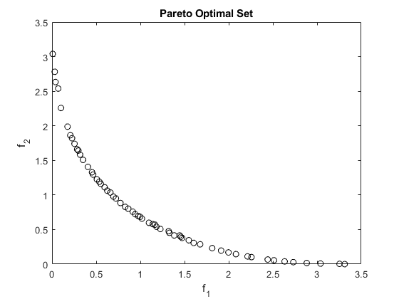

Contents
Problem 1
[x1, x2] = meshgrid(-5:0.01:12, -5:0.01:12);
f1 = (x1 - 0.75).^2 + (x2 - 2).^2; f2 = (x1 - 2.5).^2 + (x2 - 1.5).^2; figure(1) contour(x1,x2,f1,30) title('Obj. Function 1') figure(2) contour(x1,x2,f2,30) title('Obj. Function 2') figure(3) contour(x1,x2,f1,'color','g') hold on contour(x1,x2,f2) hold on xline(0.75, '--') hold on xline(2.5, '--') title('Both Function Showed On Same Contour Plot') hold off figure(4) contour(x1,x2,f1,'color','g') hold on contour(x1,x2,f2) hold on xline(0.75, '--') hold on xline(2.5, '--') title('Pareto Optimal Set in ') hold off

Plotting gradients of each function in the pareto set
f1_grad = @(x) 2.*(x(1) - 0.75) + 2.*(x(2) - 2); f2_grad = @(x) 2.*(x(1) - 2.5) + 2.*(x(2) - 1.5); for i = 1:length(x_ps2(:,1)) x = x_ps2(i,:); grad1(i) = f1_grad(x); grad2(i) = f2_grad(x_ps2(i,:)); end disp('As seen from the plot below, the relationship between the gradient of f1 and f2 are linear.') disp('We can see that within the Pareto optimal curve, when f1 has a 0 gradient(meaning it is at the min') disp('then f2 has a gradient of -2.5. While when the gratdient of f2 is at 0, f1 has a positive gradient of a little of 2.5.') disp('And inbetween one is positive while the other negative.') plot(grad1,grad2,'o') title('Gradients for each function along the Pareto optimal curve') xlabel('Grad F1') ylabel('Grad F2')
As seen from the plot below, the relationship between the gradient of f1 and f2 are linear. We can see that within the Pareto optimal curve, when f1 has a 0 gradient(meaning it is at the min then f2 has a gradient of -2.5. While when the gratdient of f2 is at 0, f1 has a positive gradient of a little of 2.5. And inbetween one is positive while the other negative.

Problem 2
rng default % For reproducibility fun = @objval1; opts_ps.ParetoSetSize = optimoptions('fmincon','MaxFunctionEvaluations',1e4,'PlotFcn','psplotparetof'); [x_ps2,fval_ps1,~,psoutput2] = paretosearch(fun,2); disp("Total Function Count: " + psoutput2.funccount);x = paretosearch(fun,2); plot(fval_ps1(:,1),fval_ps1(:,2),'ko'); title('Pareto Optimal Set') xlabel('f_1') ylabel('f_2')
Pareto set found that satisfies the constraints. Optimization completed because the relative change in the volume of the Pareto set is less than 'options.ParetoSetChangeTolerance' and constraints are satisfied to within 'options.ConstraintTolerance'. Total Function Count: 1762 Pareto set found that satisfies the constraints. Optimization completed because the relative change in the volume of the Pareto set is less than 'options.ParetoSetChangeTolerance' and constraints are satisfied to within 'options.ConstraintTolerance'.
Problem 3
X1 = -10:0.01:10; X2 = -10:0.01:10; f1 = (x1 - 3).^2 + (x2 - 7).^2; f2 = (x1 - 9).^2 + (x2 - 8).^2; %g1 = 70 - 4*X2 - 8*X1; x2g1 = (70 - 8*X1)/4; %g2 = -2.5*x2 + 3*x1; x2g2 = 3/2.5*X1; %g3 = -6.8 + x1; --> xline(6.8) % Plotting constraints and and contours of objective function contour(x1,x2,f1,30,'color','g') hold on contour(x1,x2,f2,30) hold on plot(X1,x2g1, 'color', 'r','linewidth', 2) hold on plot(X1,x2g2, 'color', 'b','linewidth', 2) hold on xline(6.8, 'color', 'k','linewidth', 2) axis([0 12 0 12]) hold off
Finding pareto front
rng default % For reproducibility fun = @objval3; A = []; b =[]; Aineq = []; bineq = []; lb = []; ub = []; nonlcon = @nonlcon3; opts_ps.ParetoSetSize = optimoptions('fmincon','MaxFunctionEvaluations',1e4,'PlotFcn','psplotparetof'); [x_ps2,fval_ps1,~,psoutput2] = paretosearch(fun,2); disp("Total Function Count: " + psoutput2.funccount);x = paretosearch(fun,2,A,b,Aineq,bineq,lb,ub,nonlcon); plot(fval_ps1(:,1),fval_ps1(:,2),'ko'); title('Pareto Optimal Set') xlabel('f_1') ylabel('f_2')
Pareto set found that satisfies the constraints. Optimization completed because the relative change in the volume of the Pareto set is less than 'options.ParetoSetChangeTolerance' and constraints are satisfied to within 'options.ConstraintTolerance'. Total Function Count: 1629 Unable to find a feasible point.
Problem 4 ANSWER
Weak pareto points are when there is point such that f(x) < f(x*). So looking at the graph, the weak pareto point is between f1 = 2 and f1 = 3.5 since it platoes there so f2 is not getting any better during the time.
Problem 5
p5 = imread('hw5_p5.jpg');
imshow(p5)
Problem 6
k = 9; % number of sample points f = @(x) 2.*x(1).^3 + 15.*x(2).^2 - 8.*x(1).*x(2) - 4.*x(1); % Constructing x_table % x1 x2 f x_table = [ -1.5, -3, f([-1.5,-3]); -1.5, 0, f([-1.5,0]); -1.5, 3, f([-1.5,3]); 1.5, -3, f([1.5,-3]); 1.5, 0, f([-1.5,0]); 1.5, 3, f([-1.5,3]); 3, -3, f([-1.5,-3]); 3, 0, f([-1.5,0]); 3, 3, f([-1.5,3]);]; % test (Not needed to run) % x_table = [ -1.5, -3, -1.022; % -1.5, 0, 4.503; % -1.5, 3, 31.997; % 1.25, -3, 8.704; % 1.25, 0, 1.636; % 1.25, 3, 8.793; % 4, -3, 37.341; % 4, 0, 10.243; % 4, 3, 4.157]; % Constructing Zeta Table zeta_table = zeros(9,3); for i = 1:9 zeta_table(i,1) = x_table(i,1); zeta_table(i,2) = x_table(i,2); zeta_table(i,3) = x_table(i,1)^2; zeta_table(i,4) = x_table(i,2)^2; zeta_table(i,5) = x_table(i,1)*x_table(i,2); end % Quadratic Approximation: % f = d0 + d1x1 + d2x2 + d3x1^2 + d4x2^2 + d5x1x2 + epsilon % We set each x variable to zeta; % f = d0 + d1zeta1 + d2zeta2 + d3 zeta3 + d4zeta4 + d5zeta5 + epsilon % Now to approx. the coefficeints, need to use a loss function. In this % case it is the OLS one (sum of squared error). The optimallity condition % for this is that e' = 0. (e' is the derivative of the loss function with % repsect to each coefficient). % This A matrix is constructed as seen in 20.16 from the book (3rd % edition). A = [k, sum(zeta_table(:,1)), sum(zeta_table(:,2)), sum(zeta_table(:,3)),... sum(zeta_table(:,4)), sum(zeta_table(:,5)); sum(zeta_table(:,1)), sum(zeta_table(:,1).^2), sum(zeta_table(:,1)'*zeta_table(:,2)),... sum(zeta_table(:,3)'*zeta_table(:,1)), sum(zeta_table(:,4)'*zeta_table(:,1)), sum(zeta_table(:,5)'*zeta_table(:,1)) sum(zeta_table(:,2)), sum(zeta_table(:,1)'*zeta_table(:,2)), sum(zeta_table(:,2).^2),... sum(zeta_table(:,3)'*zeta_table(:,2)), sum(zeta_table(:,4)'*zeta_table(:,2)), sum(zeta_table(:,5)'*zeta_table(:,2)); sum(zeta_table(:,3)), sum(zeta_table(:,1)'*zeta_table(:,3)), sum(zeta_table(:,2)'*zeta_table(:,3)),... sum(zeta_table(:,3).^2), sum(zeta_table(:,4)'*zeta_table(:,3)), sum(zeta_table(:,5)'*zeta_table(:,3)); sum(zeta_table(:,4)), sum(zeta_table(:,1)'*zeta_table(:,4)), sum(zeta_table(:,2)'*zeta_table(:,4)),... sum(zeta_table(:,3)'*zeta_table(:,4)), sum(zeta_table(:,4).^2), sum(zeta_table(:,5)'*zeta_table(:,4)); sum(zeta_table(:,5)), sum(zeta_table(:,1)'*zeta_table(:,5)), sum(zeta_table(:,2)'*zeta_table(:,5)),... sum(zeta_table(:,3)'*zeta_table(:,5)), sum(zeta_table(:,4)'*zeta_table(:,5)), sum(zeta_table(:,5).^2);]; % This b matrix is constructed as seen in 20.16 from the book (3rd % edition). b = [sum(x_table(:,3)), sum(zeta_table(:,1)'*x_table(:,3)), sum(zeta_table(:,2)'*x_table(:,3)),... sum(zeta_table(:,3)'*x_table(:,3)),sum(zeta_table(:,4)'*x_table(:,3)), sum(zeta_table(:,5)'*x_table(:,3))]; % Now Solving the system of linear equations using matrix algebra % Ad = b --> d = inv(A)*b d = inv(A)*b'; disp('Table of 9 sample design points:') x_table disp('Table of zeta values at 9 samples points:') zeta_table disp('A matrix:') A disp('b matrix:') b disp('estimated coefficients (d matrix):') d func = '15.5833 + 8.1667*x1 + 8.5*x2 -5.4444*x1^2+ 16.3611*x2^2 - 0.5833*x1*x2'; disp('From the outputs above the response surface model for the function f(x) is:') func fprintf('%f + %f*x1 + %f*x2 + %f*x1^2+ %f*x2^2 + %f*x1*x2',d(1),d(2),d(3),d(4),d(5),d(6)) function F = objval1(x) f1 = (x(:,1) - 0.75).^2 + (x(:,2) - 2).^2; f2 = (x(:,1) - 2.5).^2 + (x(:,2) - 1.5).^2; F = [f1,f2]; end function F = objval3(x) f1 = (x(:,1) - 3).^2 + (x(:,2) - 7).^2; f2 = (x(:,1) - 9).^2 + (x(:,2) - 8).^2; F = [f1,f2]; end function [Cineq,Ceq] = nonlcon3(x) Cineq = [70 - 4*x(:,2) - 8*x(:,1); -2.5*x(:,2) + 3*x(:,1); -6.8 + x(:,1)]; Ceq = []; end
Table of 9 sample design points:
x_table =
-1.5000 -3.0000 98.2500
-1.5000 0 -0.7500
-1.5000 3.0000 170.2500
1.5000 -3.0000 171.7500
1.5000 0 -0.7500
1.5000 3.0000 170.2500
3.0000 -3.0000 98.2500
3.0000 0 -0.7500
3.0000 3.0000 170.2500
Table of zeta values at 9 samples points:
zeta_table =
-1.5000 -3.0000 2.2500 9.0000 4.5000
-1.5000 0 2.2500 0 0
-1.5000 3.0000 2.2500 9.0000 -4.5000
1.5000 -3.0000 2.2500 9.0000 -4.5000
1.5000 0 2.2500 0 0
1.5000 3.0000 2.2500 9.0000 4.5000
3.0000 -3.0000 9.0000 9.0000 -9.0000
3.0000 0 9.0000 0 0
3.0000 3.0000 9.0000 9.0000 9.0000
A matrix:
A =
9.0000 9.0000 0 40.5000 54.0000 0
9.0000 40.5000 0 81.0000 54.0000 0
0 0 54.0000 0 0 54.0000
40.5000 81.0000 0 273.3750 243.0000 0
54.0000 54.0000 0 243.0000 486.0000 0
0 0 54.0000 0 0 243.0000
b matrix:
b =
1.0e+03 *
0.8768 0.9135 0.4275 3.7800 7.9110 0.3172
estimated coefficients (d matrix):
d =
15.5833
8.1667
8.5000
-5.4444
16.3611
-0.5833
From the outputs above the response surface model for the function f(x) is:
func =
'15.5833 + 8.1667*x1 + 8.5*x2 -5.4444*x1^2+ 16.3611*x2^2 - 0.5833*x1*x2'
15.583333 + 8.166667*x1 + 8.500000*x2 + -5.444444*x1^2+ 16.361111*x2^2 + -0.583333*x1*x2